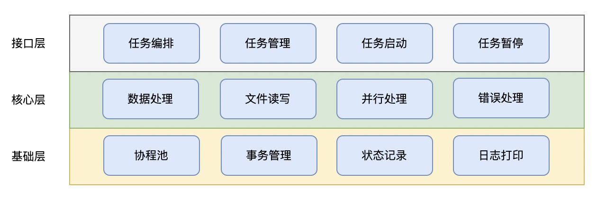
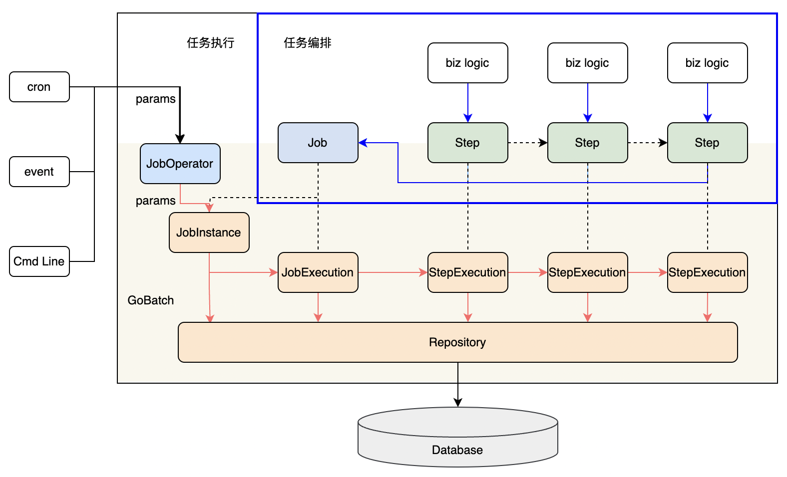
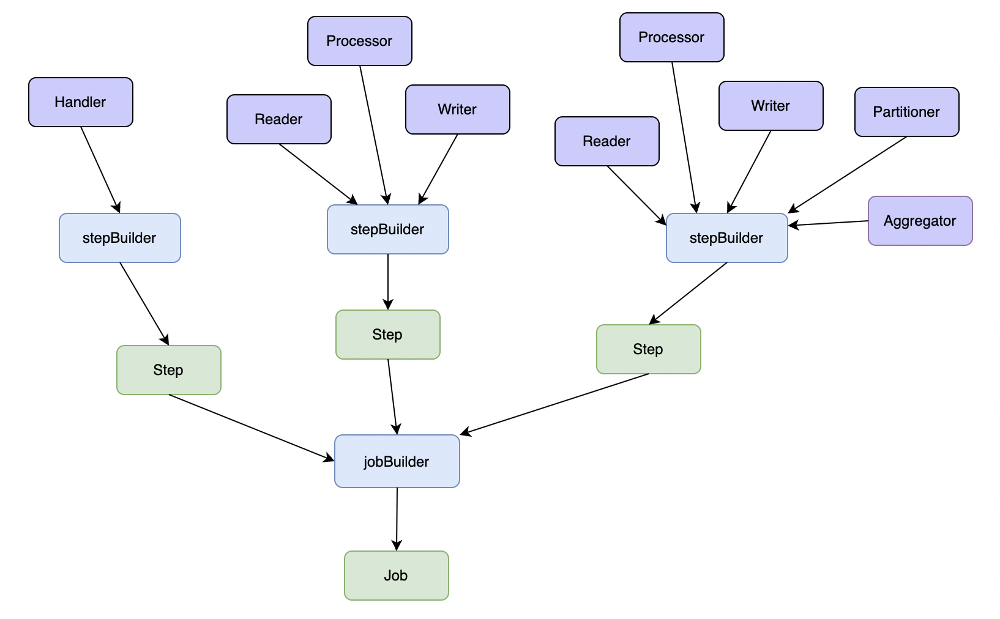
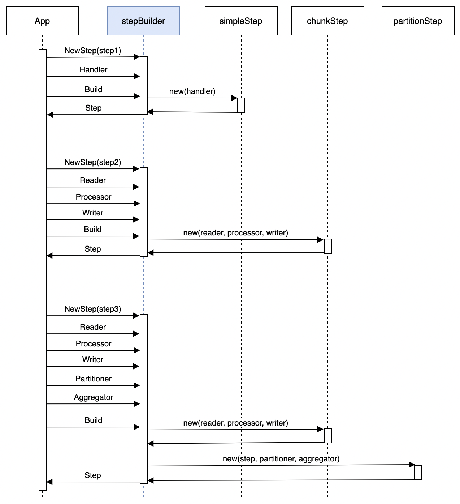
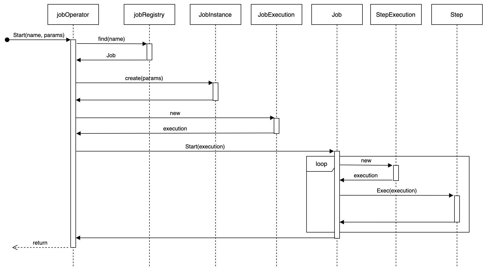
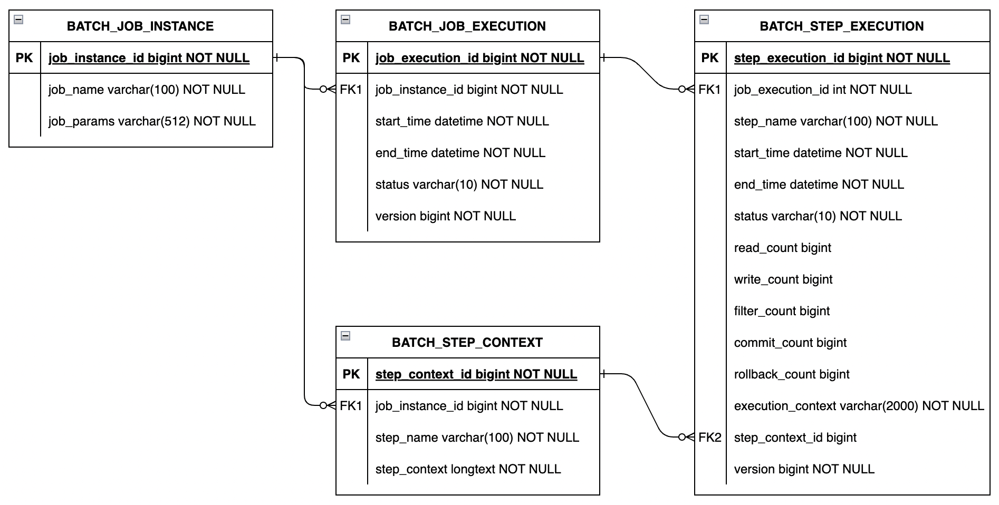

架构设计
整体架构
GoBatch整体架构分为三层：
接口层
- 提供上层应用调用的接口
- 包括任务编排、任务管理、任务的启动和暂停
核心层
- 提供任务执行引擎
- 包括数据处理、文件读写、并行处理和错误处理等通用组件
基础层
- 协程池管理
- 事务管理
- 任务执行状态记录
- 日志打印

作为一款批处理框架，GoBatch的核心能力是任务编排和任务执行。应用程序需要首先通过GoBatch接口完成任务编排，才可以执行任务。
从任务结构编排上来说，一个任务（Job）由多个步骤（Step）构成，每个步骤包含一段业务逻辑，各步骤按照先后顺序依次执行。 任务编排即是将不同的业务逻辑构造成多个步骤（Step）并按照一定顺序组装成任务（Job），交由GoBatch运行时管理。作为批处理框架，GoBatch可以管理多个任务。
任务执行时，应用程序可以传递参数给指定任务，GoBatch根据传入的任务参数生成一个任务实例（JobInstance）。一个任务实例可能会被多次执行，每次执行时，GoBatch会创建一条任务执行记录（JobExecution）用于记录任务的执行状态信息。 同理，每个Step的运行也会生成一条步骤执行记录（StepExecution）。GoBatch会将任务实例（JobInstance）、任务执行记录（JobExecution）、步骤执行记录（StepExecution）通过Repository存储到数据库中。
GoBatch支持多种方式触发任务执行，应用程序既可以通过定时任务、也可以通过实时事件、还可以通过命令行触发任务的执行。
GoBatch批处理应用的执行流程如下：

核心组件
Job（任务）
Job是批处理中最高级别的概念，代表一个完整的批处理任务。每个Job包含一个或多个Step，这些Step按特定顺序执行。Job的主要职责是协调各个Step的执行。Job的详细说明参见Job。
Step（步骤）
Step是Job中的独立处理单元。GoBatch支持三种类型的步骤：
SimpleStep（简单步骤）
- 在单个线程中执行一个任务
- 适用于简单的处理逻辑
- 通过Handler或Task接口实现具体业务逻辑
ChunkStep（分块步骤）
- 以块为单位处理数据
- 实现"读取-处理-写入"模式
- 支持事务管理
- 主要组件：
- ItemReader：数据读取
- ItemProcessor：数据处理
- ItemWriter：数据写入
PartitionStep（分区步骤）
- 支持并行处理
- 将大任务拆分为多个子任务
- 可以聚合子任务的处理结果
- 主要组件：
- Partitioner：任务分区
- Aggregator：结果聚合
关于Step的详细说明，参见Step。
构建器
JobBuilder
- 用于构建Job实例
- 支持配置Steps和Listeners
- 提供流式API
StepBuilder
- 用于构建Step实例
- 支持配置Reader、Processor、Writer
- 支持配置分区和监听器
- 提供流式API

执行机制
任务编排
- Step构建
- 使用StepBuilder创建Step实例
- 配置Step的处理逻辑和行为
- 设置监听器和其他参数

- Job构建
- 使用JobBuilder创建Job实例
- 添加Steps和配置执行顺序
- 设置Job级别的监听器

- 注册
- 将Job注册到JobRegistry
- 支持运行时查找和管理Job
任务执行
Job执行流程
- 参数验证
- 创建JobInstance和JobExecution
- 按顺序执行Steps
- 状态管理和上下文维护
- 执行结果处理
Step执行流程
- Step初始化
- 资源分配
- 执行业务逻辑
- SimpleStep：直接执行Handler
- ChunkStep：循环执行读取-处理-写入
- PartitionStep：并行执行子任务
- 资源清理
- 状态更新

事务管理
TransactionManager
- 管理数据库事务
- 提供事务开启、提交和回滚操作
- 支持自定义事务管理器
Chunk处理
- 每个Chunk作为一个事务单元
- 支持失败回滚
- 提供重试机制
扩展机制
监听器接口
JobListener
- BeforeJob：任务执行前回调
- AfterJob：任务执行后回调
StepListener
- BeforeStep：步骤执行前回调
- AfterStep：步骤执行后回调
ChunkListener
- BeforeChunk：分块步骤中每个块处理前回调
- AfterChunk：分块步骤中每个块处理后回调
- OnError：错误处理回调
PartitionListener
- BeforePartition：分区前回调
- AfterPartition：分区后回调
- OnError：错误处理回调
状态管理
执行状态记录
GoBatch通过以下对象记录运行时状态：
JobInstance
- 对应某个Job的某一组参数
- 相同参数只会对应同一个JobInstance
JobExecution
- 对应某个JobInstance的一次执行
- 重启会生成新的JobExecution
StepContext
- 对应JobInstance下某个Step的上下文
- 与执行次数无关
StepExecution
- 对应JobExecution下某个Step的执行
- 重启会生成新的StepExecution
这4个对象的数据表关系如下： 
状态流转
任务和步骤的执行状态：
- STARTING: 等待执行
- STARTED: 正在执行
- STOPPING: 正在停止
- STOPPED: 已停止
- COMPLETED: 已完成
- FAILED: 执行失败
- UNKNOWN: 未知状态